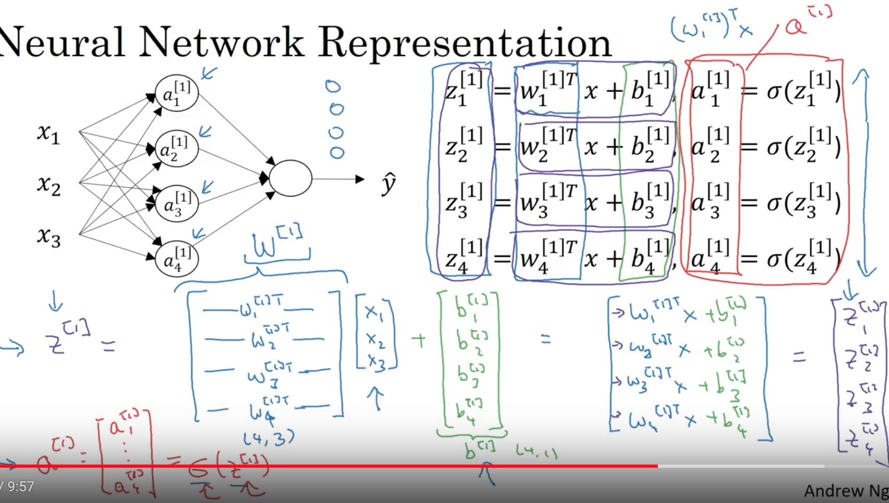
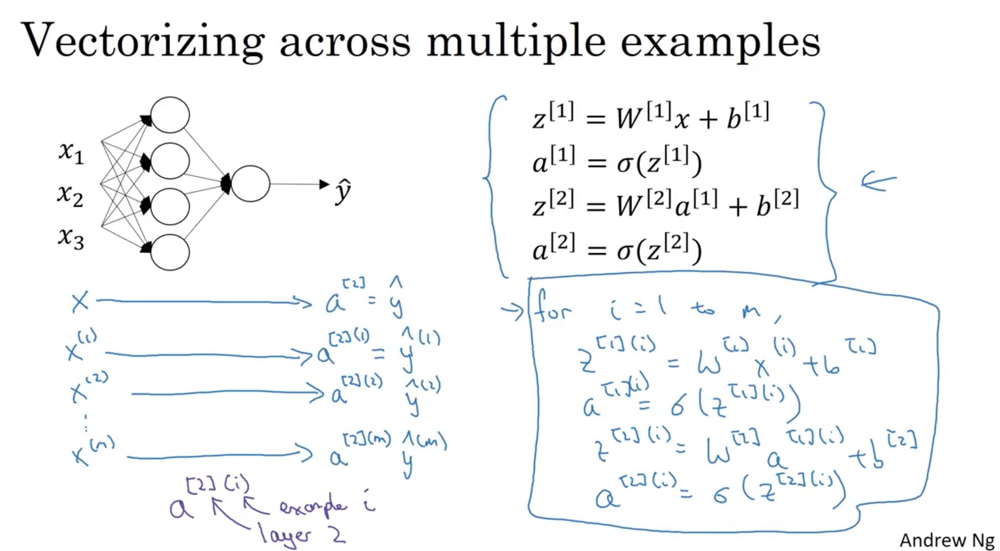

Notes for Neural Networks and Deep Learning
Table of Contents
## #+STARTUP: indent
1 NN and DL
- RELU function: Rectified Linear Unit
- A single neuron network: y = wx + b, wich is linear regression
- Supervised learning
- Structured data vs unstructured data
Drivers behind the rise of Deep Learning
Scale drives deep learning process, to hit a very high performance you need two things:
- bigger NN to take advantage of huge amount of data
- more data
Scale of:
- data
- computation: CPU GPU
- algorithms: sigmoid -> RELU function
- bigger NN to take advantage of huge amount of data
- Notation:
- (x, y) is an training example( x ∈ Rn, y ∈ {0, 1} )
- m: the # of training examples( (x1, y1), (x2, y2), …, (xm, ym) )
- mtrain: the # of training examples
- mtest: the # of test examples
- mtrain: the # of training examples
- nx: the dimention of the input feature vector
X: the input data
\begin{bmatrix} | | | \\ x^{1 } x^{2} ... x^{m} \\ | | | \end{bmatrix}
X =
X ∈ Rnxm, X.shape = (nx, m)
Y: the output
\begin{bmatrix} y^{1} y^{2} ... y^{m} \end{bmatrix}
Y =
Y ∈ R1xm, Y.shape = (1, m)
- Keep w and b as separate parameters
- superscript i indicates the ith training example
- Loss functon is applied for only one single training example
- Cost function is for the entire training set
- (x, y) is an training example( x ∈ Rn, y ∈ {0, 1} )
2 Logistic Regression
- Given x, want \(\hat{y}\) = P(y=1|x)
x ∈ Rn, - Parameters: w ∈ Rn, b ∈ R
Output:
\(\hat{y}\) = wTx + b, is a linear functon of input x
\(\hat{y}\) = σ(wTx + b)
σ(z) = \(\frac{1}{1+e^{-z}}\), or σ(z) = \(1\Big/(1+e^{-z})^{}\)
- σ(0) = 0.5
- σ(∞) = 1
- σ(-∞) = 0
- σ(0) = 0.5
2.1 Cost function
- \(\hat{y^i}\) = σ(wTxi + b), where σ(zi) = \(\frac{1}{1+e^{(-z)^{i}}}\)
- Given {(x1, y1), …, (xm, ym)}, train the model and find w and b so that \(\hat{y}^i\) ≈ yi
- Loss (error) function
- want loss function as small as possible
- First function would be the squared root error \(\mathcal{L}\)(\(\hat{y}\), y) = \(\frac{1}{2}\) (\(\hat{y}\) - y)2
- we do not use this because it may lead to optimization problem which is not convex, means it contains
local optimum points.
- we do not use this because it may lead to optimization problem which is not convex, means it contains
- The loss function we'll use: \(\mathcal{L}\)(\(\hat{y}\), y) = -(ylog\(\hat{y}\) +(1-y)log(1-\(\hat{y}\)))
- if y=1 \(\mathcal{L}\)(\(\hat{y}\), y) = -log\(\hat{y}\), want log\(\hat{y}\) large, want \(\hat{y}\) large(y->1)
- if y=0 \(\mathcal{L}\)(\(\hat{y}\), y) = -log(1-\(\hat{y}\)), want log(1-\(\hat{y}\)) large, want \(\hat{y}\) small(y->0)
- the loss functiion was defined with respect to a single training example
- if y=1 \(\mathcal{L}\)(\(\hat{y}\), y) = -log\(\hat{y}\), want log\(\hat{y}\) large, want \(\hat{y}\) large(y->1)
- want loss function as small as possible
- Cost function which measures how well you are doing on the entire training set.
- J(w, b) = \(\frac{1}{m}\) \(\sum_{i=1}^{m}\) L(\(\hat{y}^{i}\), yi) = -\(\frac{1}{m}\) \(\sum_{i=1}^{m}\) [yilog\(\hat{y}^{i}\) + (1-yi)log(1-log\(\hat{y}^{i}\))]
- J(w, b) = \(\frac{1}{m}\) \(\sum_{i=1}^{m}\) L(\(\hat{y}^{i}\), yi) = -\(\frac{1}{m}\) \(\sum_{i=1}^{m}\) [yilog\(\hat{y}^{i}\) + (1-yi)log(1-log\(\hat{y}^{i}\))]
2.2 Gradient Decent
want to find w,b that minimize \(\mathcal{J}\)(w,b), \(\mathcal{J}\)(w,b) is a convex function.
\(\frac{\partial{J}}{\partial{w}}\)
Repeat {
w := w - α\(\frac{\partial{J(w)}}{\partial{w}}\) = w - α*dw
}
- α is the learning rate and it controls how big a step we take on each iteration.
- use "dw" to represent derivative term \(\frac{\partial{J(w)}}{\partial{w}}\), same for "db"
2.3 Derivatives
f(a) = 3a, the slope(derivative) of f(a) at a=2 is 3.
\(\frac{df(a)}{da}\) = 3 = \(\frac{d}{da}\) f(a)
J = 3v, v = a + u
\(\frac{dJ}{du}\) = \(\frac{dJ}{dv}\) \(\frac{dv}{du}\) = 3 * 1 = 3
2.4 Computation Graph
- forward or left to right calculation to compute the cost function
- backward or right to left calculation to compute the derivatives
2.5 Logistic Regression Gradient decent
x1,w1,x2,w2,b -> z = w1x1 + w2x2 + b -> a = σ(z) -> L(a,y)
- da = \(\frac{dL}{da}\) = -\(\frac{y}{a}\) + \(\frac{1-y}{1-a}\)
- dz = \(\frac{dL}{dz}\) = \(\frac{dL}{da}\) * \(\frac{da}{dz}\) = (-\(\frac{y}{a}\) + \(\frac{1-y}{1-a}\)) * a(1-a) = a-y
- dw1 = x1*dz, dw2 = x2*dz, db = dz
- w1 := w1 -α dw1, w2 := w2 - α dw2, b := b - α db
2.6 Logistic Regression on m examples
J=0, dw1=0, dw2=0, db=0
For i = 1 to m
zi = wTxi + b
ai = σ(zi)
J += -(yilogai + (1-yi)log(1-ai))
dzi = ai - yi
dw1 += x1i dzi
dw2 += x2i dzi # we have only 2 features in this example
db += dzi
J /= m
dw1 /= m, dw2 /= m, dbnil /= m
w1 := w1 -α dw1, w2 := w2 - α dw2, b := b - α db
Note:
- as you can see, implementation logistic regression in this way, you need to write 2 for-loops. One for-loop over m training examples and the second for-loop is a for-loop over all the n features.
- two many explicit for-loops makes the algorithms run less efficiency. Use vertorization instead.
2.7 Vectorization
avoid using explicit for-loops.
Single Instruction Multiple Data(SIMD) features in python
dw1 = 0, dw2 = 0 –> dw = np.zeros((nx, 1))
dw1 += x1i dzi
dw2 += x2i dzi –> dw += x(i)nildz(i)
dw1 /= m, dw2 /= m –> dw /= m
J=0, dw=0, db=0
For i = 1 to m
zi = wTxi + b
ai = σ(zi)
J += -(yilogai + (1-yi)log(1-ai))
dzi = ai - yi
dw += x(i)nildz(i)
db += dzi
J /= m
dw /= m, dbnil /= m
w1 := w1 -α dw1, w2 := w2 - α dw2, b := b - α db
2.8 Vectorizing Logistic Regression
Z = [z1, z2, …, zm] = wT X + [b, b, …, b] = [wTx1 + b, wTx2 + b, …, wTxm + b]
Z = np.dot(w.T, X) + b Note: b here is a (1,1) number
A = [a1, a2, …, am] = σ(Z)
Y = [y1, y2, …, y3]
dZ = [dz1, dz2, …, dzm] = [a1-y1, a2-y2, …, am-ym] = A - Y
db = \(\frac{1}{m}\) \(\sum_{i=1}^{m}\) dzi = \(\frac{1}{m}\) np.sum(dZ)
dw = \(\frac{1}{m}\) X dZT
Z = wTX + b = np.dot(w.T, X) + b
A = σ(Z)
dZ = A - Y
dw = \(\frac{1}{m}\) X dZT X ∈ Rnxm dZ ∈ R1xm dw ∈ Rnx1
db = \(\frac{1}{m}\) np.sum(dZ)
w := w - α dw
b := b - α db
2.9 Python/numpy vectors
- a = np.random.randn(5)
- a.shape = (5,), is a "rank 1" array
- Don't use this "rank 1" array
- a.shape = (5,), is a "rank 1" array
- a = np.random.randn(5, 1), a.shape = (5,1) is a volumn vector
- a = np.random.randn(1, 5), a.shape = (1,5) is a row vector
- use assertion to check the shape of a vector/matrix
- assert(a.shape = (5,1))
- assert(a.shape = (5,1))
- use reshape to reshape an array
- a = a.reshape((5,1))
- a = a.reshape((5,1))
3 Logistic regression cost function
3.1 cost on one single example
Interpre \(\hat{}\) = P(y=1|x) The chance that y is equal to 1 for a given set of input features x.
If y=1 P(y|x) = \(\hat{y}\) the chance of y is equal to 1
If y=0 P(y|x) = 1 - \(\hat{y}\) the chance of y is equal to 0
->
P(y|x) = \(\hat{y}^{y}\) \((1-\hat{y})^(1-y)\)
->
logP(y|x) = log(\(\hat{y}^{y}\) \((1-\hat{y})^(1-y)\)) = ylog\(\hat{y}\) + (1-y)log(1-\(\hat{y}\)) = -L(\(\hat{y}\), y)
3.2 Cost on m examples
P(lables in training set) = \(\prod_{i=1}^{m}\) P(y(i)|x(i))
-> logP(lables in training set) = log \(\prod_{i=1}^{m}\) P(y(i)|x(i))
-> logP(…) = \(\sum_{i=1}^{m}\) logP(y(i)|x(i)) = -\(\sum_{i=1}^{m}\) L(\(\hat{y}^{(i)}\), y(i))
in statistics, it is called the principle of maximum likelihood estimation, which means choose parameters to maximum logP(…)
-> This justifies the cost we had for logistic regression
Cost: J(w,b) = \(\sum_{i=1}^{m}\) L(\(\hat{y}^{(i)}\), y(i))
because we now want to minimize the J(w,b) instead of maximum the likelihood, we've gotten rid of the minus sign in previous equation.
-> Finally, for convenience or the initial that our quantities are better scale, we just add one over m extra scaling factor there.
Cost: J(w,b) = \(\frac{1}{m}\) \(\sum_{i=1}^{m}\) L(\(\hat{y}^{(i)}\), y(i))
To summarize, by minimizing this cost function J of w and b we're really carrying out maximum likelihood estimation with the logitic
regression model under the assumption that our training examples were on my ID or identically independently distributed.
4 Neural Network Reresentation
4.1 For one example
Given input x:
- a[0] = x
- z[1] = W[1]a[0] + b[1]
a[1] = σ(z[1]) - z[2] = W[2]a[1] + b[2]
a[2] = σ(z[2])

Figure 1: for-loop on one example

Figure 2: Vectoring on one example
4.2 For m examples

Figure 3: for-loop on m examples

Figure 4: Vectorizing accross m examples
- Horizontal index: different training examples from left to right yor are scanning through the training set
Vertical index : different nodes in the nueural network,

Figure 5: Recap
5 Activation function
5.1 g(Z)
- g(Z) = sigmoid(Z) = \(\frac{1}{1+e^{-Z}}\), ∈ (0,1)
- g(Z) = tanh(Z) = \(\frac{e^{Z} - e^{-Z}}{e^{Z} + e^{-Z}}\), ∈ (-1, 1)
always works better than sigmoid function, the only exception is the output layer for a binary classification
in which case y ∈ {0, 1} - one of the downsides of both sigmoid and tanh funcions is that if Z is either very large or very small
then the gradient or the drivative of the slope of this funcions becomes very small(being closing to zero),
which slows down gradient decent. - g(Z) = RELU(Z) = max(0, Z)
This is mostly recommended for hidden layers.
RELU: Rectified linear unit, the derivative is 1 as long as Z is positive and the derivative or the slope is
zero when Z is negative. - g(Z) = leaky RELU(Z)
Usually works better than RELU although it's not used as much in practice. Either one should be fine. - Neural network using RELU or leaky RELU learns faster than that using simoid and tanh.

Figure 6: Recap of activation functions
5.2 Why non-linear activation functions?
- A linear activation function: the neural network is just outputting a linear function of the input no matter how many layers your neural network has.
- Output layer may be OK using linear function if you are doing a regression problem and y is a real number y ∈ R
- But for hidden layers, never use linear activation fucntions, use RELU, tanh…